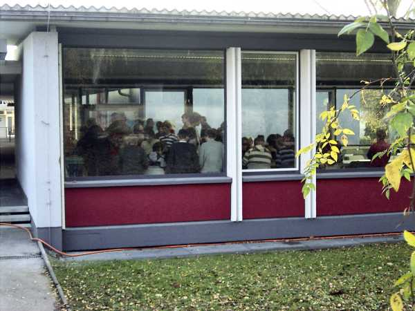
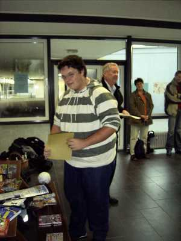
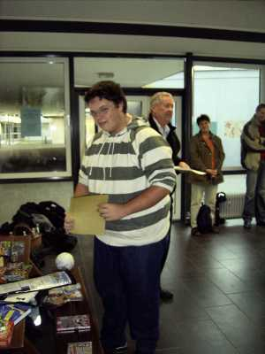
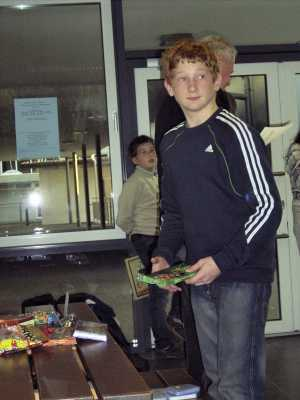

An altgewohnter Stelle, dem Aufenthaltsraum des Hochrhein-Gymnasiums,
wurde in mehreren Gruppen um die Meisterschaften gekämpft.

Jochen und Rafael analysieren.
 
Die Sieger der U14 und der U16: Daniel und Jochen


Lukas erkämpfte sich den 5. Platz in der U14, Rafael wurde 3. in der U18


Tobias beendete die U18 als 2., Nicolas haderte in der U16 mit seinem Schicksal.

Die strahlenden Sieger aller Gruppen.